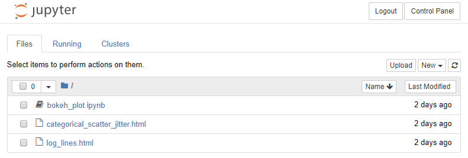
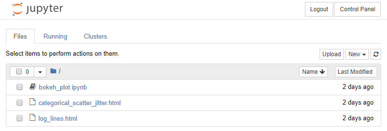

Install JupyterHub
After the server is set up, it is time to install JupyterHub on the server.
Update System
It is probably best to update the packages installed on the server in case there are updates to the operating system and installed packages since the server was created.
Open a terminal, log into the server, then update the system:
$ sudo apt update $ sudo apt upgrade
Install Python
Before we install JupyterHub on the server, we need to install a current version of Python and create a virtual environment. We'll install Python 3.7 following this description for Ubuntu 18.04 and we will use the built-in capabilities for setting up a virtual environment. Then, using the pip package manager, we will install the necessary Python packages and JupyterHub. For an alternative installation using Miniconda, see the original version of this documentation.
-
We start by installing the prerequisites:
$ sudo apt install software-properties-common -
Next, add the deadsnakes PPA to your sources list:
$ sudo add-apt-repository ppa:deadsnakes/ppaWhen prompted press
Enterto continue. -
Once the repository is enabled, install Python 3.7 and the virtual environment packages with:
$ sudo apt install python3.7 python3.7-venvAt this point, Python 3.7 is installed on your Ubuntu system and ready to be used. You can verify it by typing:
$ python3.7 --version
Create a virtual environment and install packages
For this JupyterHub install, we are going to create a virtual environment and install packages into that environment. We'll call the virtual environment jupyterhub and use python3.7 as our Python version. Then activate the jupyterhub environment and install NumPy, Matplotlib, Pandas and Jupyter. Also don't forget to install xlrd, this package is needed for Pandas to read .xlsx files.
Finally, we install JupyterLab and JupyterHub.
$ sudo mkdir -p /srv/jupyterhub $ sudo chown -R ritter:tumuser /srv/ $ cd /srv/jupyterhub $ python3.7 -m venv venv $ source ./venv/bin/activate $(venv) pip install numpy matplotlib pandas xlrd $(venv) pip install jupyterlab jupyterhub
Run a very unsecured instance of Jupyter Hub just to see if it works
Before we can actually run JupyterHub, we will need to install configurable-http-proxy that is used by JupyterHub. To do so, follow these steps:
$ sudo apt install npm $ sudo npm install -g configurable-http-proxy
OK- let's give JupyterHub a whirl. We'll start JupterHub for the first time. Note the --no-ssl flag at the end of the command. This flag needs to be included or you won't be able to browse to the server. Also note we have to have our (jupyterhub) virtual environment active when we run the command.
$(venv) jupyterhub --no-ssl
We see some output in the terminal window. The last line is something like JupyterHub is now running at http://:8000/. The first time I set up JupyterHub, I wasn't able to see the site using a web browser. No web page loaded, and the connection timed out.
Why? It turns out the firewall blocks port 8000 by default. But JupyterHub runs on port 8000 - it tells us so when JupyterHub starts. So we need to configure ufw to allow connections on port 8000 (at least for now, just to see if JupyterHub works).
To allow communication on port 8000 and start JupyterHub, type:
$(jupyterhub) sudo ufw allow 8000 # make sure the (jupyterhub) virtual environment is activated $(jupyterhub) jupyterhub --no-ssl
Now we can browse to the server appended with :8000. The web address should look something like: http://m09vm14.ma.tum.de:8000. Note this only works from inside the department network, from the outside you will have to use a technique like ssh forwarding to connect:
$ ssh -i ~/.ssh/jupyterhub_rsa -L8080:localhost:8000 m09vm14.ma.tum.de
Then, start a web browser and enter http://localhost:8080. This should show the JupyterHub login screen.
The JupyterHub login screen looks like:

Awesome! Quick log into JupyterHub using the username and password for the non-root sudo user (in my case ritter) that was set up earlier with the VM.
You should see the typical notebook file browser with all the files you can see when you run ls ~/. Try creating and running a new Jupyter notebook. The notebook works just like a Jupyter notebook running locally.
 

Quick! Log out and shut down JupyterHub
Warning
Warning! You should not run JupyterHub without SSL encryption on a public network.
Quick! Log out and shut down JupyterHub. (does quick really matter in internet security?) The site is running without any ssl security over regular HTTP not HTTPS. Key in [Ctrl] + [c] to stop JupyterHub.
After you have confirmed that JupyterHub works, close off Port 8000 on the server by keying in the following command.
$(jupyterhub) sudo ufw deny 8000 $(jupyterhub) sudo ufw status Status: active To Action From -- ------ ---- OpenSSH ALLOW Anywhere 8000 DENY Anywhere OpenSSH (v6) ALLOW Anywhere (v6) 8000 (v6) DENY Anywhere (v6)
Summary
In this section, we installed Python 3.7 on the server. Next we created a Python 3.7 virtual environment and installed NumPy, Matplotlib, Pandas, xlrd, and Jupyter into it. Then we installed JupyterLab and JupyterHub into the virtual environment. Finally we ran a very un-secure instance of JupyterHub with no SSL encryption to make sure our installation is working.
Warning
Running JupyterHub without SSL encryption is NOT ADVISED.
Next Steps
The next step is to acquire SSL certificates for our server.